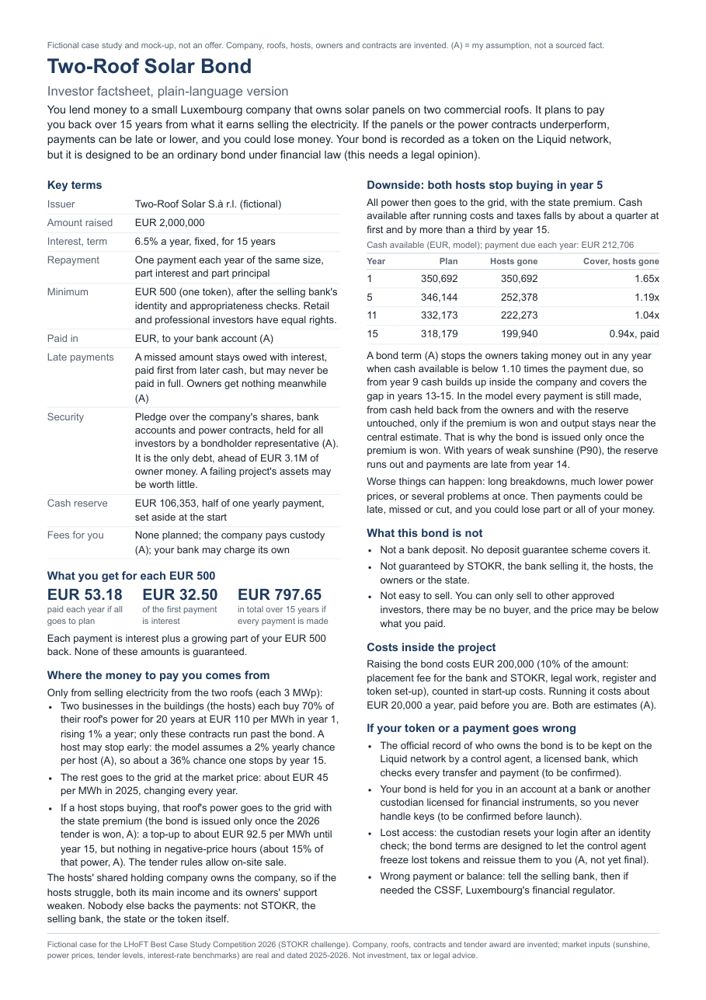

LHoFT Best Case Study Competition 2026 · STOKR challenge
A EUR 2 million bond, issued as tokens, that finances solar panels on two business roofs in Luxembourg. Investors are repaid only from the power the roofs sell. This page lets you check how that works, what happens when it goes wrong, and how the documents were kept true to the model.
The brief, point by pointVideo (5:17)Proposal (PDF, 3 pages)Investor factsheet (PDF)Excel model
Start here: three things to try
| per MWh | What the two businesses pay for the 70% of the power they use (contract, +1% a year) |
|---|---|
| per MWh | What the grid pays for the rest: the market price (official 2025 value) |
| per MWh | What the grid pays if the state premium is won: the market price plus the state's top-up to my bid (A) |
| cover | A safety margin, not a return: of cash for every EUR 1 owed in the weakest year of the plan. Investors are owed a fixed a year, paid only if the roofs earn enough; it is not guaranteed. |
The case in 5:17, in my voice, with captions on screen. Download the MP4 (24 MB)
THE BRIEF, POINT BY POINT
Every requirement in the LHoFT brief and the STOKR challenge: where it is answered, what it shows, and the weakest point I know of. Proposal references open the PDF at that page.
| The brief asks for | Where | What it shows | Weakest point |
|---|---|---|---|
| Proposal requirements (LHoFT) | |||
| Summary: problem, idea, users, benefits | §1, p. 1 · Q1 | A EUR 2M bond repaid only from two roofs' power sales; lowest plan cover 1.50x; who gains and why, in six lines. | The premium condition can read as a contradiction at first; Question 2 explains it. |
| AI approach: how it works, data, role of AI, where people stay involved | §10, Exhibit 14, p. 3 · Q4 | A claim checker (numbers, word list, Claude) and a market monitor that reruns the Excel model; a person approves every change, and the decision log shows it. | Tested on my own documents, my planted test and one blind test planted by another AI agent; no outside human test yet. |
| Fairness: bias, understandable outputs, accessibility, error correction | §8, p. 3 · factsheet | One class and the same terms for everyone; a plain-language factsheet; EUR paid to a bank account; a custodian holds the tokens; errors fixed within 5 business days (A). | The factsheet has not been tested on real readers yet; the understanding indicator in Exhibit 13 is how it would be. |
| Plan: pilot, people, timeline, costs, resources, checks | §9, Exhibit 12, p. 3 | Month by month, each step with who does it, what it costs and the check before the next one; professionals first, then retail. | Roles are generic (a bank, counsel, a contractor): the company and its partners are fictional. |
| Impact: two or three measurable indicators, assumptions labelled | Exhibit 13, p. 3 | Clean power, investor understanding (three factsheet questions at purchase) and local reach, each reported yearly. | All three are assumptions (A), with no targets set yet. |
| Risks: privacy, security, ethics, legal, case-specific | §6 and §8, p. 2 · Q2 | A real Liquid incident (6 Sep 2026), GDPR and no investor data on the chain, an arm's-length check on the hosts' price, and where the model breaks. | If the checker wrongly finds no promise in a sentence, only the person's review catches it. |
| Tools: disclose tools, cite sources, label fiction and assumptions | §10 and footers, p. 3 · files | Tools named in the proposal and the form; every number traced to the model or a dated source; fiction and (A) labelled on every page. | No gap found in review. |
| STOKR challenge | |||
| Financing journey, from issuer preparation to investor reporting | §2, Exhibit 7, p. 1 | The owners build with equity and a bridge loan; at completion the bond raises EUR 2M and repays the bridge; reporting after issue. | Bridge interest and refinancing if the offer fails sit with the owners and are not modelled. |
| The instrument: rights, repayment source, costs, risks | §3, Exhibits 1-2, p. 1 · Q1 | One equal yearly payment of EUR 212,706, paid right after running costs and tax; a pledge for all investors; two thirds of the amount owed can vote to enforce it. | The proposal uses lender terms (DSCR, DSRA, P90); the factsheet and this page explain them. |
| Tokenisation vs a conventional route, and when it adds value | §4, Exhibits 5-6, p. 2 · Q3 | For one project a bank loan is cheaper: 5.1-7.0% against 9.9% all-in. Tokens help when the setup is reused across many roofs and many small investors. | The saving across a programme is not modelled; the pilot has to show it. |
| A simple issuance flow | §5, Exhibit 7, p. 2 | Six steps from preparation to reporting, each with who does it and the check that must pass. | No gap found in review. |
| A plain-language investor factsheet | factsheet extract, p. 3 · full page | One page: what you own, where the money comes from, what happens if both hosts leave, what the bond is not. | Claude raised two low points (a source for the tender rule, how the pledge is enforced); the proposal answers both, the one-page factsheet does not. |
| One downside scenario and its effect on repayment | §6, Exhibits 8-10, p. 2 · Q2 | Both businesses leave in year 5: cover 0.94x; in the model every payment is still made, from cash held back from the owners, with the premium won. | Without the premium, cover would fall to 0.25x, so there is no bond without the award; with weak sunshine on top, payments run late from year 14. |
| Assumptions on revenue, operating costs, interest and maturity | Exhibit 4, p. 1 | Each input with its source and date, or labelled (A). | Costs, the bid and the reserve are my assumptions. |
| Likely legal classification, approvals, specialist checks | §7, Exhibit 11, p. 3 · Q3 | Likely a transferable security under MiFID II, so outside MiCAR; the EU prospectus exemption; a CSSF notice; the gates and checks before launch. | No legal opinion yet; it is one of the gates before launch. |
| STOKR success measures | |||
| Clarity of rights | Q1 · §3, p. 1 | What you own, the order of payment, the pledge and the vote, and that you can sell only to approved investors. | How the pledge is enforced is in the proposal, not on the factsheet. |
| Feasibility | Exhibit 3, p. 1 · Q2 | Lowest plan cover 1.50x without the premium; on-site sale allowed by the tender rules the Ministry sent on 16 Oct 2026 (its officers have not yet answered in writing). | The project earns less than the coupon: the owners' return falls from 4.6% without debt to 3.1% with the bond; they do it for cheaper power and a programme. |
| Cost awareness | Exhibit 6, p. 2 · Q3 | 9.9% all-in against 5.1-7.0% for a bank, said plainly; EUR 200,000 to raise the bond and EUR 20,000 a year to run it (A). | The costs are estimates (A). |
| Risk disclosure | Exhibits 9-10, p. 2 · Q2 | Where the model breaks; 2.3% of 20,000 simulated futures miss a payment; not guaranteed by anyone. | The simulation leaves out long breakdowns, cost overruns, rule changes and fraud. |
| No promise of liquidity, repayment or open access | Q4 · factsheet extract, p. 3 | Not guaranteed; selling only to approved investors, maybe at a loss; buying only after the bank's checks; the checker flags any sentence that implies otherwise. | None found in the final checks. |
QUESTION 1
Only the two roofs. Nobody else stands behind the payments.
bought on site by the two businesses in the buildings, at , set for years
sold to the grid at about
Both sides gain: the businesses pay less than their own grid bill of about (Eurostat, H1 2026; in the model both prices rise 1% a year, A), and the bond gets a steady price for most of its income while they keep buying.
the selling bankSTOKRthe statethe owners
What protects investors instead:
Cover is the cash available after costs and tax, divided by the payment due. It is a safety margin, not a return.
It is the central case, before any risk: expected sunshine for the site (PVGIS, 1,000 kWh per kWp in year 1, 0.4% loss a year), the contract prices above, and running costs from published studies and my assumptions, each labelled in the model. The downside, the weak-sunshine case and the simulation below are the risk views.
Excel: Summary!C20. The Python engine that drives the simulation reproduces the workbook to the euro on every row.
QUESTION 2
My worst case is both businesses stopping in year 5. The state premium is what protects investors then. With it, this scenario pays in full in the model; weak sunshine or more negative-price hours on top would make payments late.
If the businesses move out or fail, they stop buying the power (investors keep their tokens) and all of it goes to the grid, which on its own pays only about per MWh. Luxembourg runs a solar tender every year. A winner gets the market price topped up to a fixed level, its bid, for 15 years, on power sold to the grid.
EUR per MWh of power sold to the grid. If the premium is won, the state pays the blue gap to the company for 15 years, except in hours when the market price is negative.
| The plan | Needs no premium: lowest cover is with or without it. While the businesses buy 70% of the power, the other 30% goes to the grid at the market price, per MWh (official 2025 value). The tender rules would pay the premium on that 30% too, but the model leaves it out: counting it would lift plan cover to . |
|---|---|
| What it protects | If both businesses leave, all power goes to the grid. On the market price alone, the roofs would make only for every EUR 1 owed in year 5 (cover ), falling to by year 15, and of payments would not be paid when due. With the premium, the state tops the price up to my bid, per MWh (A), for 15 years (cap ; the last round's rooftop award was ). Take off the hours when the market price is negative and no premium is paid ( of grid power, A) and a per MWh fee to the company that sells the power, and cover is : in years 13-15 the roofs make slightly less than they owe, and cash held back from the owners since year 9 fills the gap, so in the model every payment is made. |
| So it comes first | The bond is offered only once both roofs have won the premium and been built: the owners and a bridge loan pay for the build, and investors pay in at completion, so they carry neither the tender result nor the build. This round's bids close on 30 October 2026. |
| No award | No bond. Nobody has invested yet, so investors keep their money, and the build waits: the project bids again when the next yearly round opens (the last three opened in July). |
| Past rounds | Recent rounds had more capacity on offer than bids to fill it: the 6th round (2024) awarded of the MW offered (), the 7th round (2025) of MW (about ). That points to too few bids rather than tough competition, though a bid above the cap or one that fails the tender's competitiveness test is still rejected. The 8th round offers MW for rooftop plants like ours. Round summaries on guichet.public.lu: 6th, 7th (published 13 Feb 2026); 8th round notice (27 Jul 2026). |
Lowest cover in the 15 years, in the model. Weak sunshine is the 10-year P90 output, of the central estimate every year, about a 1 in 10 chance.
Pick a bid and see what happens to the worst case, both businesses leaving in year 5. Every setting shows its own rerun of the Excel model, run on 18 October 2026 and labelled simulated: none of them is market data. Nothing is calculated in your browser.
Worst case, lowest cover, by bid in the tender (EUR per MWh)
Click a bar. Red: some payments are not paid when due. My bid is EUR 92.50 (A), the cap EUR 95; the last round's rooftop award was EUR 89.75, just under 90.
Moves the plan, and the worst case only when the premium is not won. EUR 45: the official 2025 value, used in the model. EUR 61.17: the monitor's 12-month value on 17 October 2026, which I rejected (decision log in Question 4).
With the premium won, the grid price moves only the plan, and only while the premium is not counted: once it applies it tops the price up to the bid, so the worst case depends on the bid alone. Without the premium, the worst case moves with the grid price.
A Monte Carlo simulation draws sunshine, prices and businesses leaving at random for each of 20,000 fifteen-year paths, with the premium won, and counts how often investors miss a payment. The rows show how much one assumption matters: the chance that a business leaves.
Bars share one scale. Every other path pays every payment on time from the roofs' own cash. It tests my assumptions and is not a forecast: long breakdowns, cost overruns, rule changes and fraud are left out.
Left out: long breakdowns, cost overruns, rule changes, fraud. It tests my assumptions; it is not a forecast.
Code: mc_engine.py (reconciled to the Excel model), mc_run.py, results mc_results.json.
QUESTION 3
For one project, no: a bank loan is cheaper. Tokens can pay off when the same setup is reused across many roofs, which the pilot has to show.
| A plain bond | This bond | |
|---|---|---|
| Legal form | A bond | A bond, likely a transferable security under MiFID II, so outside MiCAR. A legal opinion is needed. |
| Register | The bank's books | Tokens on Liquid, the blockchain STOKR uses, kept by a licensed bank as control agent. STOKR runs the investor portal and the payouts. |
| Who can invest | Usually the bank alone | Professional and retail investors from EUR 500, after the bank's identity and appropriateness checks |
| Selling | Rarely possible | Only to other approved investors. There may be no buyer, or only below what you paid. |
The bond's 6.5% interest plus raising costs of and running costs of a year (A). Bank: KfW 270 rates, +1% fee (A); there is no public Luxembourg rate.
I asked the Ministry whether a plant that wins the tender may sell part of its power on site, and whether the premium is then paid on the rest. On 16 October 2026 it sent the tender rules (cahier des charges, 8th round, art. 2.2): every use of the power that Luxembourg's 2007 electricity law allows is accepted, and the premium is paid only on power sent to the grid. The model does not count the premium on the 30% surplus while the businesses buy power, so on this one point the plan is cautious. Still open: the rule for negative-price hours (asked, no answer yet) and the legal form of the on-site sale.
QUESTION 4
Two tools: a claim checker that tests every sentence against the model, and a monitor that reruns the model on new prices. A person decides every change.
The claim checker reads a document in three layers. Every number must match a cell in the Excel model or a dated source. A word list flags risky words such as "guaranteed" unless negated. Claude (Opus 5.5) reads each sentence for promises the other two cannot see. To test it, I wrote a factsheet with seven planted mistakes. Pick a sentence:
numbers word list Claude
7 of 7 caught. Only Claude caught sentence 4: it has no number and no flagged word, yet it promises easy selling.
The planted test above is my own. For a fairer one, a separate AI agent that never saw the checker's code was given the real factsheet and a description of what the checker looks for, and planted 10 mistakes in a copy, leaving every other sentence word for word. Then the checker ran blind.
8 of 10 caught, and no false alarms on the unchanged sentences, including two traps: "Liquid network" (a name, not a liquidity claim) and "guaranteed" in sentences that say the bond is not guaranteed.
Missed: a wrong year on the market price (2023 instead of 2025), and "the state steps in through the premium where the hosts left off", which implies state backing. The numbers layer also let two wrong figures through, EUR 110,000 and 8%, because each happens to equal an unrelated cell in the model; Claude caught both. A person still reads every document before it goes out.
Files: planted factsheet, answer key, checker report, score (18 Oct 2026).
The two points on the factsheet, both low severity: Claude wanted a source for the line that the tender rules allow on-site sale (it is art. 2.2 of the tender rules the Ministry sent, cited in the proposal), and wanted the factsheet to say how investors can enforce the pledge (two thirds of the amount owed can vote to, as the proposal says). I left both off the one-page factsheet for space.
Reports: factsheet, proposal, planted test. Code: claim_checker.py. No investor data goes to the AI.
The monitor fetches public prices, reruns a copy of the Excel model, checks it against the engine, and lists every sentence the new numbers would change. Nothing changes until an analyst approves.
Used in the model, kept
official full-year 2025 value, the one the state premium uses
A first run on 14 Oct found EUR 60.67. Both times I kept EUR 45. The bond runs 15 years and the past year includes the 2026 gas price shock; only the 30% sold to the grid depends on this price. Try other prices in Question 2.
Every analyst who uses the tool logs decisions the same way, so a reviewer can see who changed what, and why. Run reports: 14 Oct, 17 Oct. Code: monitor.
INVESTOR FACTSHEET
One page in plain language: what you own, where the money comes from, what happens if both businesses stop buying, and what the bond is not. It is a fictional mock-up.

HOW THIS WAS CHECKED
FILES
price_grid.py